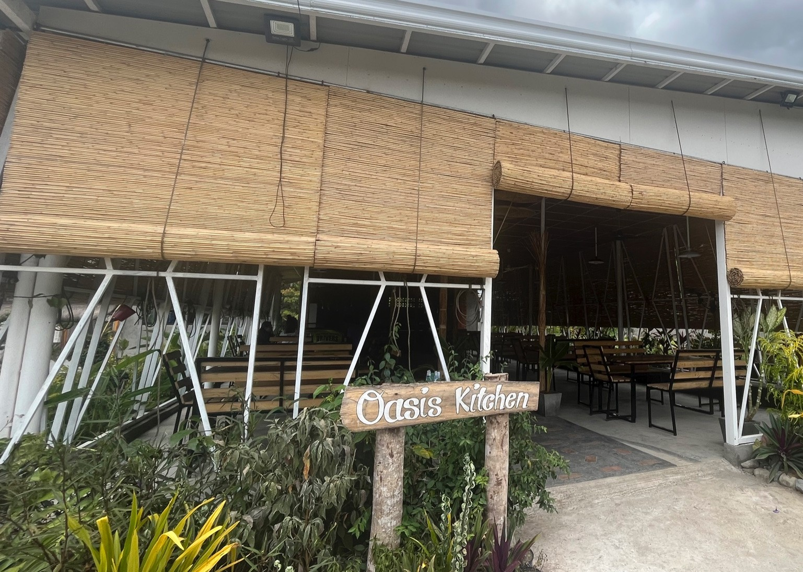
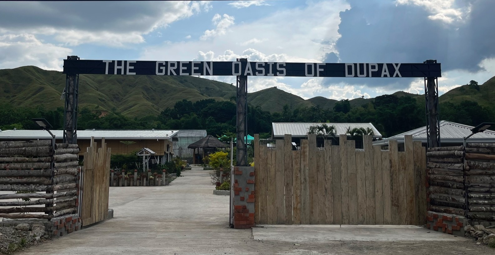
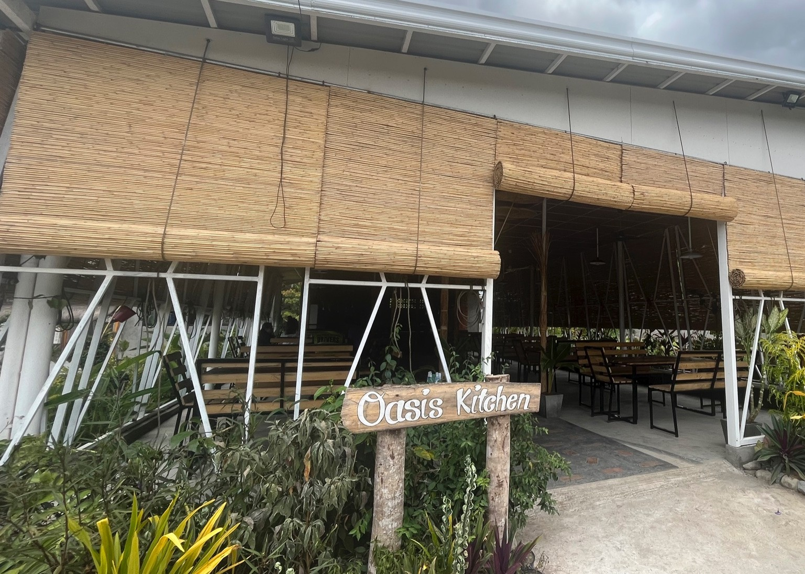
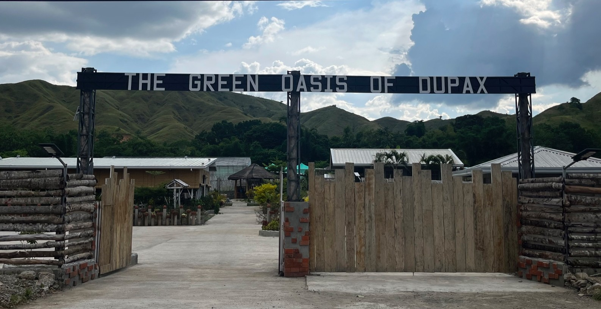
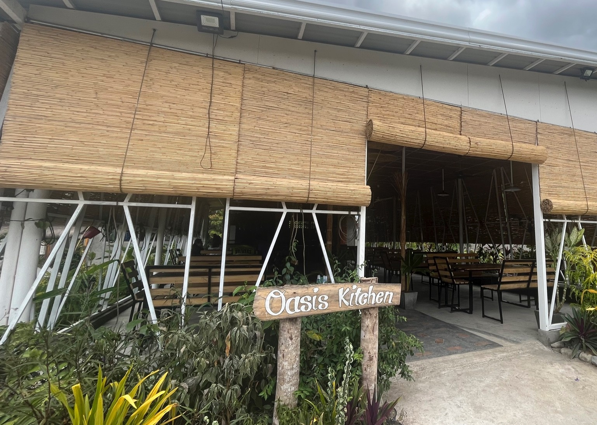
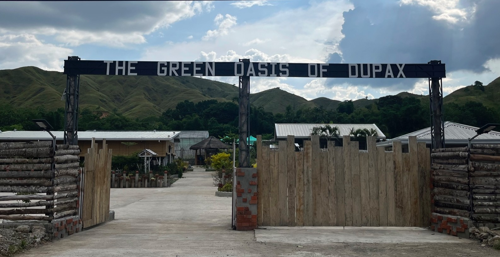
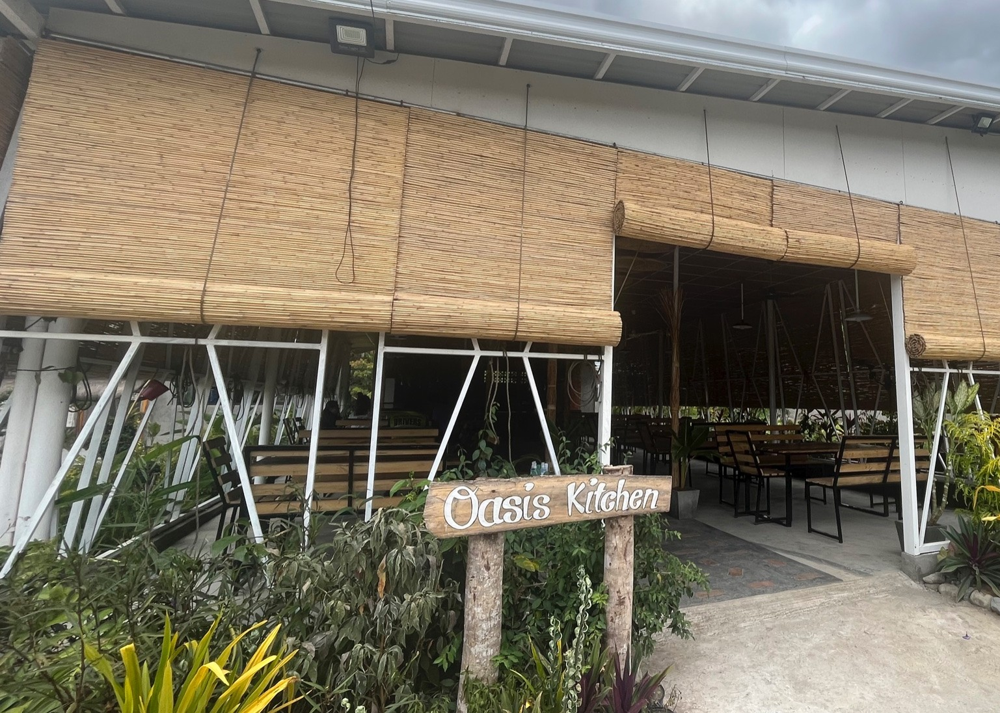
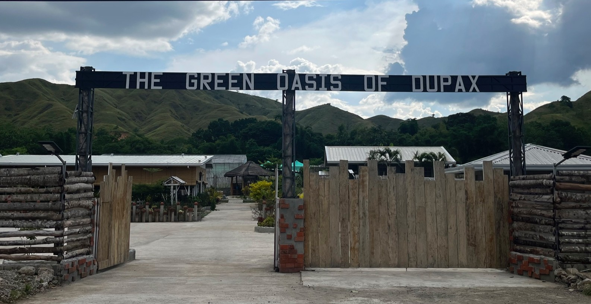

A dining destination that blends nature with flavor, The Green Oasis of Dupax is a farm-to-table gourmet restaurant in Dupax del Sur. It offers dishes made from the freshest ingredients, many of which are harvested straight from the farm. The restaurant highlights culinary with a modern twist, creating meals that are both wholesome and memorable. More than just a place to eat, it is an experience of sustainability, culture, and the authentic taste of Dupax.